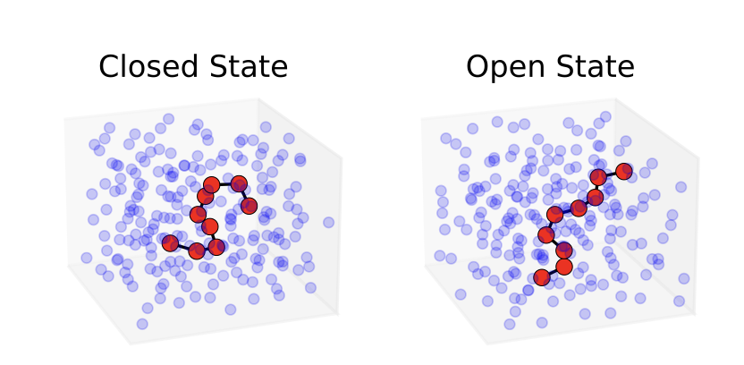

Research Path
-
Advanced Monte Carlo methods for molecular simulations.
My current main research line, with Marylou Gabrié, Tony Lelièvre, Gabriel Stoltz, and Christoph Schönle, focuses on overcoming metastability in Monte Carlo simulations
of complex molecular systems. I work at the interface with modern generative machine-learning proposal samplers,
enabling efficient sampling in CV spaces of intermediate dimensionality and extending
their applicability to realistic molecular systems.

-
Non-equilibrium statistical mechanics and response theory.
My research addresses time-reversal symmetry and response theory in classical and quantum systems, including dynamics with magnetic fields. I derived Onsager reciprocity relations and fluctuation theorems without Casimir modifications, showing that spin–field interactions preserve time-reversal invariance, with implications for transport and thermodynamic phenomena.
I also work on the transient time correlation function (TTCF) approach to nonequilibrium response, applying it to prototypical statistical mechanical models such as Fermi–Pasta–Ulam chains and the Lorentz gas, with a focus on anomalous transport and scaling behavior in low-dimensional systems.
Publications
A list of my publications is available, showcasing my contributions to the field. For a detailed overview, please visit the dedicated publications page.
Learn More...